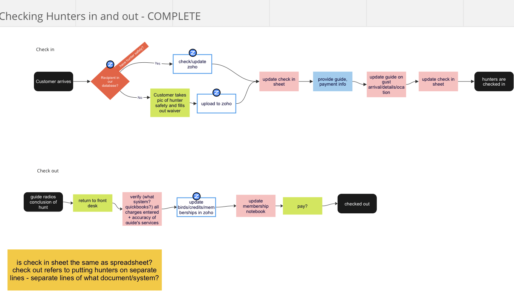

<--
KIOWA CREEK
Positive Affirmation Page
The scope of this project was to design and develop an redesign of Kiowa Creek's website. I am working with a project manager and developer to produce a improvement to Kiowa Creek's existing website. Prior to working with my team, Kiowa Creek had been working with an SEO specialist to create a website that was exceptionally high on search results, but at the cost of the design.
Kiowa Creek's initial site was a display site with no conversion to measure. Through research process and discovery with stakeholders, we began to narrow down the new site's priorities as;

Kiowa's goals:
- Moving from brochureware to moneymaker
Secondary: The first-time visitor Tertiary: Avid visitor
- Online booking
- Online membership purchase and renewal
- Dividing visitor goal paths
- The member/regular visitor
- Reduce redundant tasks in workflow
- Increasing membership value (online)
- Reduce redundant tasks in workflow
- Optimize warm leads
Positive Affirmation Page

Clues from Google Analytics
The google analytics identified a few potential drop off points through initial website journey. Since the initial website was largely a display site, there were not classic conversion rates to measure. We notices an almost negligible amount of traffic through the site to the contact page.
We were able to identify heavy traffic areas; the sporting clays page. The popularity and importance of the information on this page was later confirmed through our research.
The information that our client found the most useful from this analysis were;
The majority (35%) of users between age 25-35 (this was younger than expected by our client, but inline with their goal demographic)
A larger percentage of female visitors than expected. (Again, this varied from their largely male customer base, but was inline with the type of business that our clients were trying to attract.)
While these findings may seem arbitrary, they went a long way with advising our clients through the discovery process to consider improvements in they web precence that they otherwise may not have been open to.
Initial Research
1) Gathered Data:
Throughout the discovery process, we conducted 10 user interviews with current & prospective members, and staff. We sent out a quant survey to current members.
2) Data Analysis:
I tagged these findings using Userbit, and we sorted the tags to an affinity map
and utilized feature prioritization tools to extract insights.
3) I went back to findings to support these insights and presented to stakeholders.
From stakeholder meetings and the above research, we were able to come to the following findings;
PAIN POINTS:
MEMBERS
Fear that guest will not have a good time
staff
Juggling information in lot of different systems
Tedious processes/Desire for more automation
Lack of decision making power
OWNERS
Pulled in too many directions
Miss just focusing on customers
PROSPECTS
Unsure how to contact venue
Irritated that price does not match web presence.
Annoyeilable immediately if course produces error.

USER GOALS:
MEMBERS
As a member trying to bring a friend, I need an easy and clear booking process because I need my friend to pay and book online without deciding to bail on me.
OWNER
As an owner of the company that I built from the ground up, I need our online presence to reflect the personal but high class aspects of out business because I want our business to continue to attract customers that will add to our community.
StAFF
As a staff member responsible for organization and customer service, I want to spend less time on tedious tasks because I want to have more attention available to enjoy working with customers.
PROSPECTS
As an outdoors enthusiast who is new to the sport, I want to know what Kiowa Creek does and whether this would be something my family and I would enjoy, because I don't want to waste my time on something that won't be worth the time and money.
Qualitative Research
User Interviews
We conducted 8 incentivized user interviews amongst Kiowa Creeks current dedicated members.
My role in this step was to:
- Create the first draft of the interview script
- Conduct 4 of the 8 user interviews
- Take notes on the 8 user interviews we conducted and tag and extract observations from the findings
- Compose summary of themes amongst out qualitative and quantitive research to present to our clients
- Present findings to project manager and clients
The project manager and I collaboratively affinity mapped the findings in Miro and presented a summary of our work so far to our clients.

Quantative Research
Quant Survey
We then sent out a non-incentivized 26 question quant survey to their current members. You may ask, why so lengthy? We had found through research up to this point a striking degree of sense of dedication to Kiowa Creek from current members. Our suspicion was that the sense of belonging that members experience would fuel survey participations.
Lucky for us, we were correct! We were surprised to receive almost 500 responses from current members, almost 300 within 48 hours!
Not only did these quant survey results inform the feature prioritization (and ultimately re-scoping of the project) that we were about to embark on, but it went a very long way in informing our client's decision to automate business processes.
1) HAAZZAHH!
We did it! Well, the research did, that is!
Up until this point, while we were very confident that an online booking process would significantly imrpove the workflow of our clients, our clients were very nervous about online payments, to the degree that they were not initially willing to have a problem solving conversation about this.
Not only did the research findings prompt their willingness to dive into the the conversation, it got them all the way there! By the end of the presentation on our findings, they were all in with online payments and booking.
Thank goodness! We are READY to make their lives EASIER!
2) UH Ohhh!
Annddd, not a full meeting after this, did we realize that their current book keeping and document system is . . . not what we thought it was. Ooopps. Since so much of their work flow is offline and pen-and-paper, how are we going to automate that?
That lead us to some back tracking. We'd finally gotten the clients on board with an automated system and now we have to change the scope of what we can do?
..How might we turn a pen and paper check in system to an online booking system?
Back to the drawing board and a new scope for the project!
The project has changed from website revamp to the building of an application that will automate major sections of their workflow and integrate with the website that we will build them!
So, where from here?
So, what can we DO about it?
Template 1
From here, we used these pain points to clarify with clients and their staff, the priority of them and started to identify solutions and prioritize features. There are Miro notes that I took through client meetings while reformatting the scope of the project. We later used these for feature prioritization. To clarify, these screen shots were almost exclusively based off of our client's prioritization. We will reshuffle during further feature prioritization soon!

Right now (1/3/23) I'm working in Maze to conduct the usability studies on our v1 prototypes for this project.
This is my first time doing this through Maze. I feel like a kid in a candy shop every time I've got new data to feed it!
Ask me about it!
To be continued . . .
<---